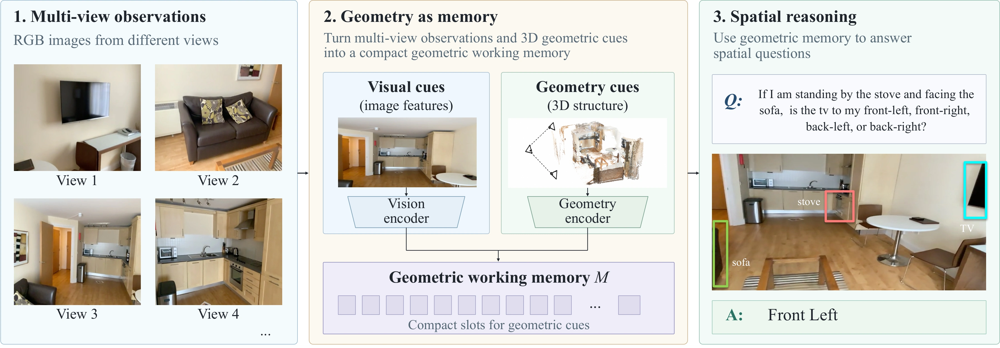
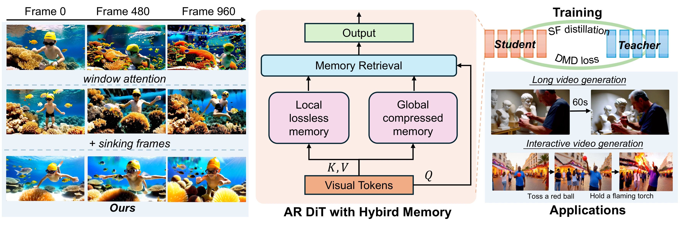

Research
View publications ↓Research now lives on the homepage. This page preserves previously shared links.
What should a robot perceive, remember, and predict to act reliably in an unfamiliar environment?
4D world models for action
I develop models that generate visual futures together with corresponding robot actions. Making geometry and motion explicit lets the predicted future guide action generation and support consistency checks before execution.
Examples: S4NDBOX
Memory across views and time
Perception in changing environments
Publications
First- and Co-first-author Work
* Equal contribution · † Project lead. Publication and review status are indicated for each work.
Franka Research 3 · robot demo (10×) Verifiable 4D World–Action Model for Robust Robot Control
Explicit 4D futures connect visual prediction with robot control and support pre-execution geometric consistency checks.
+13.3 pp success on RoboTwin Hard after clean-only training, versus RGB-only; zero-shot sim-to-real on Franka Research 3.

Cross-view reasoning · illustrative example GaMe: Geometry as Memory for Multi-View Spatial Reasoning
Geometric working memory brings multi-view spatial evidence into vision–language reasoning.

RGB input · RGB-only depth · EAG3R EAG3R: Event-Augmented 3D Geometry Estimation for Dynamic and Extreme-Lighting Scenes
RGB–event fusion recovers scene geometry under fast motion and difficult lighting, including daytime-to-nighttime transfer.

Generated frames 0 · 480 · 960 VideoSSM: Autoregressive Long Video Generation with Hybrid State-Space Memory
Local attention and recurrent state-space memory retain recent detail and long-range context for autoregressive video generation.
LiFR-Seg: Anytime High-Frame-Rate Segmentation via Event-Guided Propagation
Event-guided propagation and temporal memory keep semantic predictions up to date between RGB frames, without requiring an image at each query time.
EVSplat: Uncertainty-Aware Gaussian Splatting for Dynamic Scenes with Event Camera
Uncertainty-aware Gaussian splatting for dynamic-scene reconstruction with an event camera.
LiFR v2: Completion-Augmented Event Propagation for High-Rate Dense Prediction
Propagation reuses observed content, event-guided completion recovers missing source support, and memory retains inferred content for later queries.
Event-Based Depth Prediction With Deep Spiking Neural Network
Collaborative Work
Continuous-Time Digital Twin with Analog Memristive Neural Ordinary Differential Equation Solver
Topology Optimization of Random Memristors for Input-Aware Dynamic SNN
Charge-Selective 2D Heterointerface-Driven Multifunctional Floating Gate Memory for In Situ Sensing-Memory-Computing